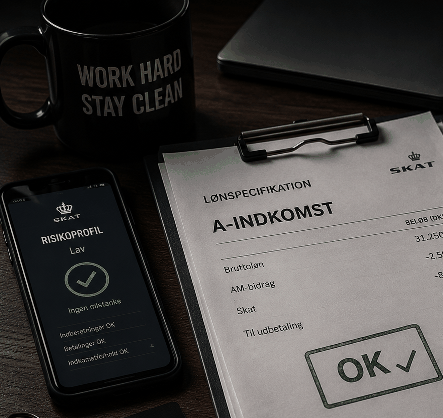

Der var engang, hvor status i organiserede miljøer blev målt i leasede AMG’er, Dubai-billetter og spontane tirsdagsflasker på SOHO.
Men status er ikke vigtigere end sindsro.
Flere yngre medlemmer vælger i dag at kombinere deres “forretning” med helt almindelige jobs på papiret. Ikke fordi de drømmer om HR-afdelinger eller personalemøder med filterkaffe og mandagsmorgenmad. Men fordi et liv med registreret A-indkomst efterhånden bliver betragtet som en mere stabil investering end endnu et impulsivt prestigeprojekt på fire hjul.
Sådan siger en anonym advokat med tidligere tilknytning til skatteområdet.
Han beskriver det som en slags administrativ camouflage. Ikke nødvendigvis avanceret skattesvindel. Mere en forståelse af, hvordan moderne kontrolsystemer fungerer i praksis.
Modellen er ifølge flere kilder relativt ensartet:
Det handler mindre om disciplin end om æstetik.
Skattestyrelsen arbejder i stigende grad med såkaldte privatforbrugsberegninger, hvor myndighederne vurderer, om en borgers officielle indkomst realistisk kan finansiere den livsstil, vedkommende fører. Den metode er blevet central i en lang række sager om både organiseret kriminalitet og skjulte indtægter.
I praksis betyder det, at den klassiske “pludselige luksuslivsstil” efterhånden fungerer som en slags selvangivelse.
Det fortæller en tidligere økonomisk rådgiver med erfaring fra miljøet.
Flere omtaler strategien som økonomisk normalisering.
Det indebærer blandt andet helt almindelig bankaktivitet, realistiske dagligvarekøb og sociale medier uden synlige statussymboler. Enkelte nævner også campingferier i Vestjylland som “ekstremt lav-risiko adfærd”.
Andre peger på LinkedIn som den vigtigste investering.
Sådan griner et yngre medlem tørt.
Paradoksalt nok beskriver flere den nye strategi som en form for mental sundhed.
Det siger en 26-årig mand med tilknytning til et organiseret miljø.
Skattestyrelsen har de senere år intensiveret kontrollen med organiserede miljøers økonomi og peger selv på brugen af stråmænd, fiktive virksomheder og skjulte indtægter som centrale fokusområder.
Det ændrer dog ikke ved, at det moderne ideal i flere miljøer tilsyneladende ikke længere er flamboyant rigdom.
Men regnskabsmæssig troværdighed.
Det mest suspekte i Danmark anno 2026 er at ligne en person, der aldrig har været i Bilka.